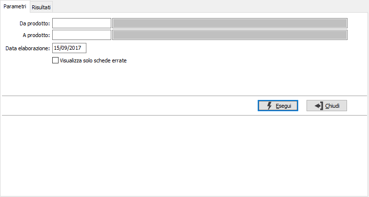
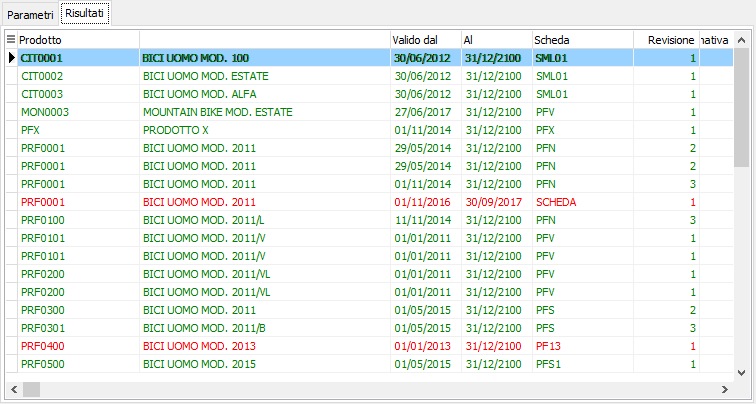

Controllo schede tecniche
La procedura consente di controllare la struttura della scheda tecnica e di evidenziare eventuali loop accidentalmente creati. La finestra si articola su due pagine, una per i parametri ed una per i risultati; nei parametri è richiesto un range di prodotti per reperire le schede tecniche ad essi associate, una data di elaborazione a cui controllare le schede tecniche.

La pressione del pulsante Esegui dà inizio all'elaborazione, al termine viene visualizzata la pagina dei risultati; se si è spuntata la casella "Visualizzare solo le schede errate" saranno presenti solo le schede errate, altrimenti quelle errate vengo visualizzate in rosso e le corrette in verde.
